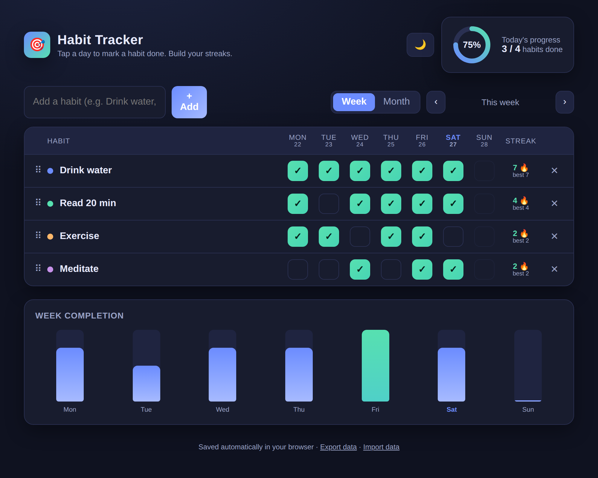

Zaznaczaj dni jednym kliknięciem, obserwuj jak rosną Twoje serie 🔥 i sprawdzaj postępy w widoku tygodnia lub miesiąca. Wszystko działa w przeglądarce — nic nie instalujesz.

Zaznacz dzień jednym kliknięciem. Kliknij ponownie, żeby cofnąć. Prościej się nie da.
Każdy nawyk pokazuje aktualną serię oraz Twój najdłuższy rekord wszech czasów.
Przełączaj między siatką tygodniową a miesięczną mapą cieplną z procentem ukończenia.
Zmień nazwę i kolor nawyku, przeciągnij, by zmienić kolejność, włącz motyw jasny lub ciemny.
Wszystko zapisuje się lokalnie w przeglądarce. Wyeksportuj kopię do pliku w każdej chwili.
Jeden plik, zero zależności, brak logowania. Otwiera się natychmiast i działa offline.
Zacznij dziś — pierwsza seria zaczyna się od jednego kliknięcia.
Otwórz Habit Tracker →